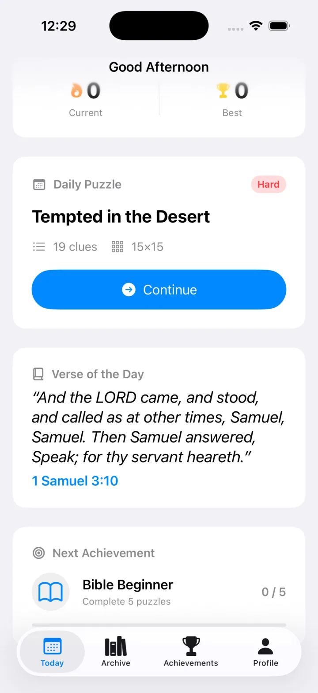
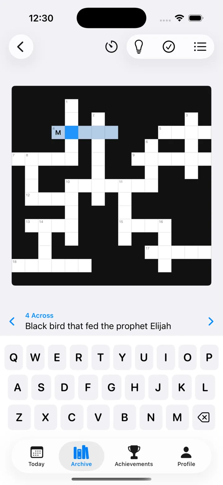
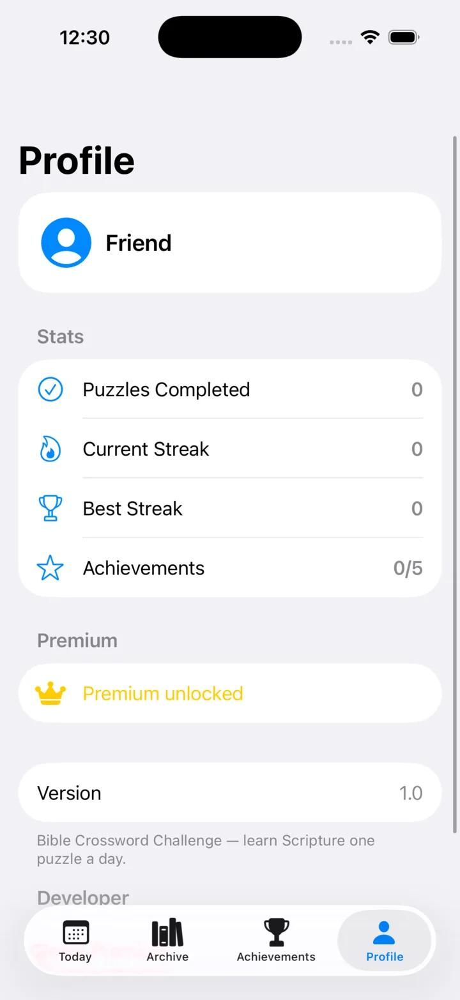

A daily Bible crossword for iPhone
A fresh crossword every day, with clues rooted in Scripture — from Genesis to Revelation. Build a streak, earn achievements, and end every puzzle on a verse.
What’s inside
The features, written the only way a crossword app should write them.
Also in the box: achievements from Bible Beginner to Apostle, iCloud sync across your devices, light & dark mode, and not a single ad between you and the Word.
“Thy word have I hid in mine heart, that I might not sin against thee.”Psalm 119 : 11 · KJV
Every puzzle closes with the verse behind its theme — so each day’s play plants a little more Scripture in your memory.
A look inside
No clutter, no pressure — just you, a grid, and the Word.

Begin the dayYour streak, today’s puzzle, and the Verse of the Day in one quiet screen.

Solve the gridClues like “Black bird that fed the prophet Elijah” teach as you type.

Watch it growPuzzles completed, best streaks, and achievements earned along the way.
Why a Bible crossword
Bible Crossword Challenge is a Christian word game built around one simple habit: a daily Bible crossword puzzle you can finish with your morning coffee. Every clue is rooted in Scripture — the people, places, miracles, and verses of the King James Version — so each grid you solve leaves a little more of the Word with you.
Beyond the daily puzzle, an archive of 80+ hand-crafted Bible crosswords covers the whole story: Noah’s Ark, David & Goliath, the Exodus, the Parables, the Christmas Story, Easter and the Resurrection, and many more. Puzzles work fully offline on iPhone and iPad, sync through iCloud, and every one ends on the verse behind its theme.
Whether you love Scripture, love crosswords, or both, download Bible Crossword Challenge free on the App Store and start today’s puzzle.
Questions
Yes — download and play the daily puzzle for free. Premium unlocks the full archive and extras.
Yes. A fresh daily Bible crossword arrives at midnight, and the archive holds 80+ hand-crafted puzzles across the whole Bible — from Noah’s Ark to Easter morning.
They are made for everyone — lifelong believers and casual solvers alike. If a clue has you stuck, smart hints nudge you along without spoiling the answer.
No. The app works fully offline and your progress is saved on your device — and synced privately through iCloud if you play on more than one.
All verses are drawn from the King James Version (KJV).
Yes — Bible Crossword Challenge runs on both iPhone and iPad, and your progress syncs between them through iCloud.
Bible Crossword Challenge is on iOS today. If you’d like it on Android, tell us — it genuinely helps us decide.
Today’s puzzle is waiting
Free on the App Store. Tomorrow’s puzzle will be there too.